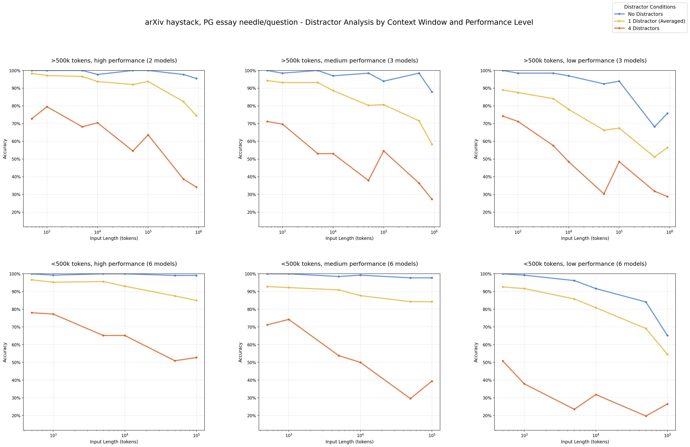

用AI写文章，第一稿其实写得挺顺。
你补充了背景，让它改；改偏了，你再解释一遍；解释完，它又把前面确认过的要求给忘了。
于是提示词越写越长，结果却越改越糟——这事儿是不是很眼熟？
为什么会越聊越差？
这类随上下文变长而表现退化的现象，常被叫作「上下文腐烂」，Context Rot。不过，单次改稿变差，不一定都是它造成的。
Chroma 在 2025 年的一项研究里，对比了两种给模型信息的方式：一种是把完整的聊天记录都扔进去，另一种只给回答问题真正需要的相关片段。在这项聊天记录问答测试中，后者得分明显更高。研究原文 ↗

看到这儿你可能会想，那是不是以后都尽量精简提示词、少给背景？
倒也不是。不能只看「给得多不多」，也得看「给得对不对」——窗口装得下，不代表模型能准确挑出重点、处理信息之间的冲突，还能一直记着你之前确认过的要求。这些能力，不能只靠窗口大小来判断。
需求越加越多，方向却越来越模糊
拿服务甲方打个比方，你可能更有感觉。
领导 A 说，这篇要年轻化，要有传播力。
领导 B 补一句，品牌调性得稳重，产品卖点一个都不能漏。
执行的人理解完，又自己加了层要求：开头必须抓人，但不能太夸张；得有故事，但不能编；要突出产品，又不能像广告；最好短一点，但这些信息一个都不能少。
每个人都觉得，自己只是补充了一点点。
到乙方手里，已经变成一份谁也不敢删、谁也没排优先级的需求。乙方盯着文档，反而不知道从哪下笔了。
模型当然不会像人一样揣摩职场关系，这里只是打个比方。但它面对的信息难题有相似之处：聊天越长，它除了要完成眼下这个任务，还得从一堆历史信息里辨认，哪些要求还作数，哪些方案早就被否掉了。
Chroma 的另一组实验也发现了类似的事：往输入里加一些看着相关、其实不回答当前问题的「干扰信息」，模型在测试中的表现也会下降。实验出处 ↗

需要说明的是，这些实验展示了特定条件下的退化，尚未解释清楚内部机制，也不是说聊得越久就一定越差。
换个角度想，你可以把上下文想象成一张工作台。
刚开始，桌上只摆着任务和材料，很清爽。聊得久了，旧方案、废稿、临时冒出来的想法、反复纠错的记录，全堆了上去。
模型不会累，但这张桌子会越来越乱——你要它做事，它还得从这堆东西里找对材料。
四个动作，把工作台收拾清楚
那具体怎么办？这四个动作，更像是在帮它收拾桌子。
1、改需求，直接给完整的最新版
别一直把「这里再改一下」「那个用之前的」往上叠。把当前的目标、字数、核心观点、必做和不能做的事项重新捋一遍，顺带说清楚哪些旧要求已经作废。
遇到冲突，自己先排好优先级——别把取舍也藏进聊天记录里，让模型自己猜。
2、连续跑偏，先别急着打补丁
刚纠正的问题又冒出来了，否掉的方案又被捡回来，改一处却弄丢另一处——这时候值得停一下，让它先复述一遍自己理解的任务是什么。
如果连任务都说不明白，先把要求对齐，再接着往下写。要不要重开对话，没有一个「聊满多少轮」的标准答案，看它当下的表现更靠谱。
3、重开之前，做个交接
可以直接发这么一段话：
整理一份新对话交接说明，保留当前目标、已确认事实、最终要求、必要原文和待解决问题，标明已否决的方案和还没证实的猜测。
自己核对一遍，再带到新对话里去。关键数字和限制条件尽量留原文，摘要这东西也会出错，别把旧的错误一起搬了家。
4、按阶段给材料，别一股脑全塞进去
选题阶段聊角度，提纲阶段定结构，写正文时再补充详细事实和具体要求。影响选题方向的关键事实与限制，得从一开始就给。
进入下一阶段，带上已经确认的成果就行，不用把每一轮的争论都留着。
长提示词可以有用，清晰、相关、互不打架的材料值得留；需要清掉的，是过时的要求和干扰信息。
下次再觉得AI越聊越笨，不妨先想想，自己是不是也变成了那个不停补需求的甲方——把优先级排好，把废稿收走，给它一张能真正开工的桌子。